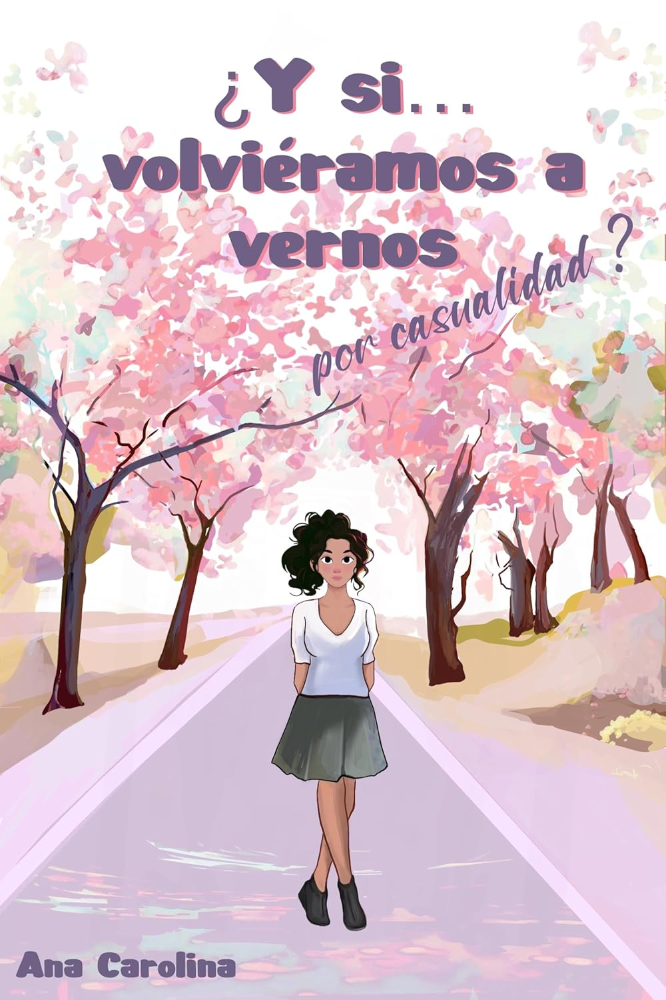

Mis Libros
¿Y si no, nos hubiéramos conocido por casualidad?

Vicky deja atrás su hogar para mudarse a Madrid con su mejor amiga, con el sueño de estudiar fotografía. Sin embargo, sus planes de convertirse en una fotógrafa de éxito no salen como siempre había imaginado...
Compra ahora¿Y si volviéramos a vernos por casualidad?
Vicky nunca imaginó que construiría una vida con Tae y Aera a su lado, casi perfecta, cercana a lo que muchos consideran una familia modelo, en Corea del Sur...
Compra ahora